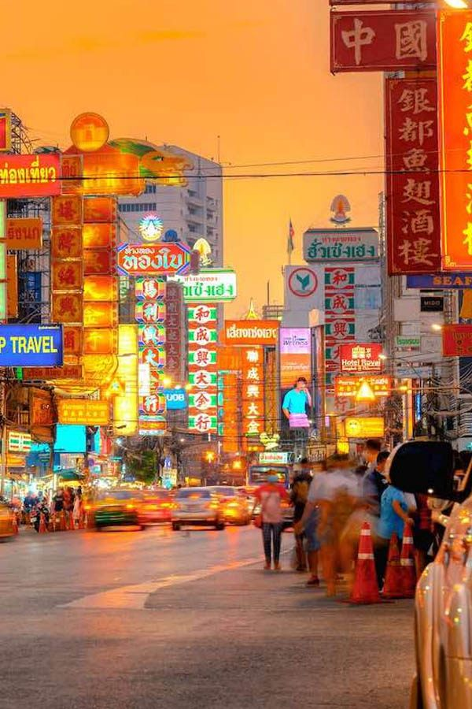
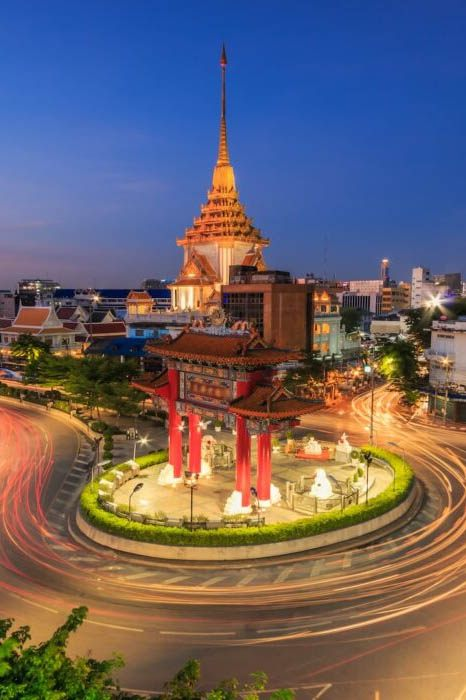

Bangkok's Chinatown, centered on the famous Yaowarat Road, is one of the world's largest and most vibrant Chinese communities outside of China. Established in 1782 when King Rama I moved the Chinese population from the area where the Grand Palace now stands, this historic district has evolved into the ultimate destination for authentic Chinese food and culture in Southeast Asia.
What makes Bangkok's Chinatown extraordinary is its combination of world-class street food, traditional Chinese architecture, bustling gold trading shops, and authentic cultural experiences. The area transforms dramatically from day to night, with early mornings focused on wholesale markets and gold trading, while evenings come alive with incredible street food scenes that attract food lovers from around the globe.
For Royal Ivory Hotel guests, Chinatown offers an easily accessible cultural adventure just 20 minutes away via MRT. The district provides an authentic taste of Chinese-Thai culture, incredible value for money, and some of Bangkok's most memorable dining experiences.
Bangkok's Chinatown is conveniently accessible from Royal Ivory Hotel using the MRT subway system, offering a direct route to the heart of Yaowarat Road without dealing with Bangkok traffic.
Total Cost: 42 Baht one-way | Journey Time: 20 minutes | Frequency: Every 4-7 minutes
🚇 Travel Tip from Royal Ivory: Visit Chinatown in the evening (5:00-10:00 PM) when the street food scene is most active and the area comes alive with neon lights. The MRT is the most reliable way to avoid traffic, especially during rush hours.

Bangkok's Chinatown is globally recognized as one of the world's best street food destinations. The concentration of authentic Chinese restaurants, street vendors, and traditional food stalls creates an unparalleled culinary experience that attracts food enthusiasts from around the world.
Yaowarat Road is the main food strip with countless restaurants and street stalls. Plaeng Nam Road offers more local, less touristy options. Sampeng Market area features traditional breakfast spots and wholesale food vendors perfect for authentic morning experiences.
Beyond the incredible food scene, Chinatown offers rich cultural attractions showcasing Thai-Chinese heritage, traditional architecture, and spiritual sites that have served the Chinese community for over 200 years.
Chinatown's streetscape features traditional Chinese shophouses with distinctive architectural elements: narrow frontages, deep interiors, ornate facades with Chinese characters, and traditional tile roofs. Many buildings date to the early 1900s and showcase authentic Chinese commercial architecture adapted to Bangkok's climate.
Chinatown is Bangkok's center for gold trading and features unique shopping opportunities ranging from traditional Chinese goods to modern electronics, all within the historic setting of Yaowarat Road.
Chinatown features Thailand's highest concentration of gold shops, with prices updated in real-time based on international markets. Look for shops displaying current gold prices in windows. Always verify purity (96.5% Thai gold standard) and get official receipts for purchases.
Shopping tip: Gold shops also sell beautiful traditional Chinese jewelry, jade accessories, and precious stones at competitive prices.
Chinatown transforms dramatically after sunset, becoming one of Bangkok's most vibrant nighttime destinations. The combination of neon-lit signs, busy street food vendors, and bustling crowds creates an unforgettable urban experience.
| Time | Activity | Location | Experience |
|---|---|---|---|
| 17:00-18:00 | Temple visit and cultural exploration | Wat Mangkon Kamalawat | Peaceful spiritual experience |
| 18:00-19:30 | Gold shops and traditional shopping | Yaowarat Road main strip | Cultural shopping experience |
| 19:30-21:30 | Street food tour and dinner | Food stalls throughout area | Authentic culinary adventure |
| 21:30-22:30 | Night market browsing and dessert | Side streets and dessert shops | Sweet ending and final shopping |
Evening Chinatown offers incredible photography opportunities with neon Chinese signs, busy street scenes, traditional architecture illuminated at night, and the vibrant energy of one of Asia's busiest food districts. The contrast between traditional elements and modern city life creates unique urban photography possibilities.
For first-time visitors, guided food tours provide excellent value and cultural context while ensuring you experience the best of Chinatown's incredible culinary scene without language barriers.
🥟 Smart Eating Tips:
Street food: 50-150 Baht per dish - incredible value for authentic flavors
Mid-range restaurants: 300-600 Baht for full meals with multiple dishes
High-end Chinese restaurants: 800-2,000 Baht for premium dishes like shark fin soup
Pro tip: Follow local crowds to the busiest stalls - high turnover means freshest food!
Evening (5:00-10:00 PM) is the best time to visit Bangkok Chinatown when street food vendors are most active, shops stay open late, and the area comes alive with neon lights and bustling crowds. Avoid midday heat and limited food options during afternoon hours.
Take MRT Blue Line from Sukhumvit to Wat Mangkon station (20 minutes, 42 Baht). Exit at Gate 1 and walk 5 minutes to Yaowarat Road. Alternatively, take taxi direct (25-40 minutes, 150-250 Baht depending on traffic). MRT is faster and more predictable.
Must-try Chinatown foods: authentic dim sum, roasted duck noodles, shark fin soup, bird's nest soup, Chinese BBQ pork, fresh seafood, traditional Chinese tea, and famous street-side wonton noodles. Follow local crowds for the freshest options.
Yes, Bangkok Chinatown is very safe for tourists. It's a busy commercial area with heavy foot traffic and police presence. Standard precautions apply: watch valuables, be aware of surroundings, and stick to well-lit main streets at night.
Yes, Chinatown is Bangkok's gold trading center with hundreds of shops displaying real-time prices. Thai gold is 96.5% pure. Always verify purity, get official receipts, and compare prices between shops. Gold shops also sell beautiful traditional Chinese jewelry and jade.
🏮 Respectful Visiting:
Temples: Dress modestly, remove shoes when entering prayer areas, be quiet and respectful
Food stalls: Point to what you want, be patient during busy times, smile and thank vendors
Shopping: Gentle bargaining acceptable for goods, not for food prices
Photography: Ask permission for close-up photos of people, especially elderly vendors
Chinatown pairs perfectly with nearby attractions: Grand Palace and Wat Pho (15 minutes by taxi), Wat Arun Temple (boat ride across river), or Khlong Toei Market (morning market experience). Plan a full cultural day exploring historic Bangkok.